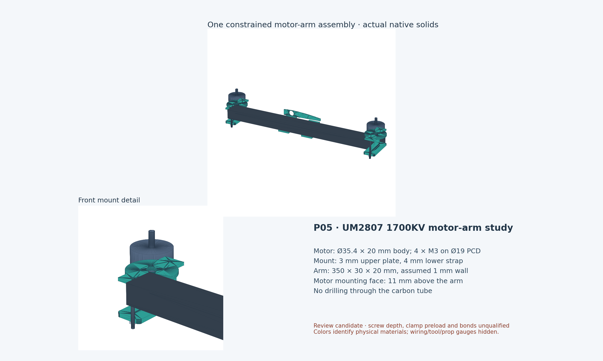

Open dimensioned plate profiles · Construction guide
# P05 motor-arm assembly review **Status: detailed mechanical candidate; no fabrication or operation approval.** ## What is modeled Two native FreeCAD motor-arm subassemblies: 122 separate physical objects, 121 fixed joints and three grounding constraints. Each arm carries two UM2807 1700KV motor envelopes, individual mount plates/rails/straps/liners/fasteners, saddles, split wing rib blanks and explicit bond layers. Propeller, wire, maximum motor and tool envelopes are reference objects excluded from added mass. P03/P04 source geometry is preserved. The P05 file contains the two arms only. This is not a full-aircraft assembly conversion. Mounting holes and shaft dimensions follow the supplier listing/user drawing; blind-hole depth, wire exit and motor interiors are unverified. New mount dimensions, material properties and hardware choices are proposals. ## Mass reconciliation - P04 structural budget: 1041.028 g. - P05 structural budget: 1136.914 g, gross aircraft candidate. - Increase: 95.886 g. - Aircraft accounted / sizing: 3.6121 / 3.8121 kg. - Aircraft CG X: 397.50 mm, provisional; battery held fixed. - Reserve:200 g, separate and counted once. The earlier71.683 g generic hardware and42 g embedded motor-mount allowances remain removed. - Carbon arms: 107.520 g for both arms. - Wing saddles, rib blanks and arm bond layers: 43.487 g for both arms. - Four complete motor clamp mounts: 141.537 g for both arms. - Motors including supplied leads: 208.000 g for both arms. Each complete clamp mount is 35.384 g. Each motor is assigned52.000 g including its three200 mm leads; the simplified motor solid is not weighed by its envelope density. Existing26.0816 g per prop estimate stays outside the arm CAD mass; hub/nut mass within that estimate still needs confirmation. Removed P04 arm/saddle/shoe solids: 187.276 g. Added P05 structural solids: 292.544 g. Removed12.000 g lift hardware allowance; reclassified 1.3824 g out of the12 g arm/wing adhesive budget into explicit bondlines; added4.000 g residual for rail fillets and strain relief. The residual adhesive budget is therefore reduced, not counted twice. Composite snapshot combines retained P04 solids with replacement P05 parts. It does not imply every retained aircraft part exists in the P05 native file. P05 intrinsic inertia tensors are not updated in this mass-only snapshot; no updated aircraft inertia claim is made. Other P04 overlap/fit uncertainties remain. ## Geometry and constraints - Native reopen/solve checks: PASS: native reopen/solver, both-arm perturbation recovery, STEP volume and component positions. - Internal positive-volume physical interference pairs: 0. - STEP: all122 solids valid; aggregate volume difference 1.06e-08 relative; maximum matched component-center error 7.96524e-05 mm. Nested placements are explicitly flattened for export. - Both arms recover their motor position and orientation after a deliberate displacement followed by solving. These are installation constraints; rotor motion and joint flexibility are not modeled. - Maximum diameter/length motor bell gauge has3.000 mm minimum external mount clearance. Motor screw tips inside the motor remain unverified, and are excluded from this external bell screen. - Clamp tool envelopes and provisional wire routes have no detected physical collisions. Motor drivers are blocked by the installed arm/strap, so the motor is attached to its plate on the bench before clamping the unit to the arm. - Minimum10-inch sweep clearance to the tested P04 wing skin/core/fuselage: 19.595 mm. These are static ideal envelopes at an assumed prop seat plane; actual hub, nut, blade deflection, airframe flex and tolerances are not qualified. - In-plane sweep gaps:66 mm front/rear on each arm,276 mm between corresponding opposite-side rotors. Motor axes remainX235/555, Y±265 mm. - Nominal motor-washer to rail edge clearance:0.782 mm. Suggested hole-center fabrication target±0.10 mm and profile±0.20 mm are proposals requiring a full tolerance review. ## Joint demand screens - Axial load scenario: 25.950 N per motor, inherited hypothetical17.3 N ×1.5. - Torque scenario: 0.348 N·m from ideal Kt × supplier62 A/3 s. Phase current/drive convention and actual prop transient load are unverified. - Each motor screw: axial 6.488 N, torque shear 9.165 N. Thread pullout cannot be accepted without base/thread depth/material data. - Upper plate thrust strip bending: 4.758 MPa. Maximum clamp-preload strip bending: upper 55.000, lower 38.672 MPa; assumed glass bending value70 MPa. - Assumed100 N nominal/150 N maximum preload per clamp screw, friction coefficient0.2: friction torque capacity 0.853 N·m after nominal thrust reduces upper contact normal. This is a scenario, not a tightening specification. - Upper/lower mean contact pressure at maximum assumed preload: 1.339/0.417 MPa. Carbon wall crushing, local plate bending, creep and clamp slip require tests. - Saddle average bond screen: 0.134 MPa on720 mm² effective area. Reversed reactions, peel, rib connection and skin/core/spar transfer remain open. ## Updated global screens - Wing 3g: PASS; twist -1.487°, tip displacement 26.29 mm. - Wing -1.5g: PASS; twist -0.747°, tip displacement -13.15 mm. - Wing 3g at70% assumed stiffness: FAIL; twist -2.124°, tip displacement 37.56 mm. No mount reinforcement stiffness is added to the wing beam. Nominal3g passing does not qualify the aircraft or attachments. The70%-stiffness case still exceeds the2° twist criterion. ## Decisions and missing evidence 1. Verify actual motor safe screw insertion and tightening instructions. Proposed M3×6 with3 mm plate and0.5 mm washer inserts2.5 mm, which is not a verified safe depth. 2. Resolve21 V/5S maximum of the supplied1700KV motor versus existing6S battery:21.6 V nominal/25.2 V full. Mechanical packaging can proceed; direct supply is incompatible with the listing. 3. Confirm actual propeller/hub/nut, wire exit and bending radius, operating thrust/torque and cooling. Current10-inch sweep is packaging only. 4. Select glass laminate, liner, adhesive and hardware; test clamp slip, carbon crushing, bond peel, fatigue and wet/hot strength before specifying preload or torque. 5. Develop the wing saddle/rib/spar interface and resolve the remaining P04 aircraft interfaces. See docs/CONSTRUCTION.md for dimensions, manufacturing concept, assembly order, loads and assumptions.